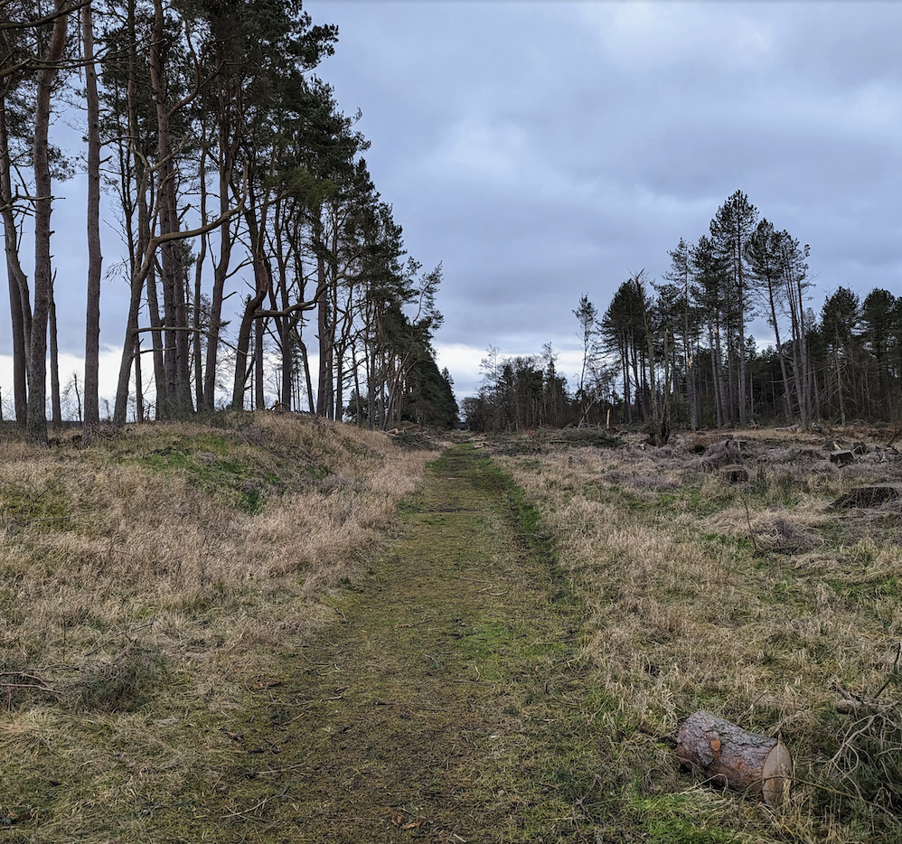

The Story so Far
🚴️ Tracing the Route of the Tentsmuir Cycle Link
This project began with a simple (and not new) idea: exploring the potential for a new, dedicated route for active travel in our community, connecting Tayport to Leuchars.
I had been working in Denmark for a few years where cycling infrastructure is second to none and had seen first hand the huge benefits to communities in terms of health, well being, reduced congestion and choice that good segregated cycle paths bring. But, living in Tayport,there was a real lack of options for safe cycling locally towards St Andrews, which is an economic hub in this part of Scotland. The main road between Tayport and Leuchars is narrow, busy and has no cycle lanes - not suitable for families or less confident cyclists. The alternative route via Tentsmuir is lovely, but runs along on gravel tracks unsuitable for road bikes and is a significant detour. It seemed crazy not to have a direct safe option, especially when a good route existed between Dundee and Tayport and St Andrews to Leuchars - if we could get a link between Tayport and Leuchars we could connect all these places with a safe, efficient route for cycling and walking.
🗺️ The First Exploration: South from the Larick
I heard through the Tayport community gardens that Mark was well connected to cycle communities - I approached Mark at a meeting in Larick center, asking if anyone had thought about a potential path along the old railway line from Tayport to Leuchars. Turns out indeed many had but there had never been much progress. So Mark, Jim (who Mark introduced me too) and I decided to go for a cold February walk from the Larick Centre, heading south down the Scott & Fyfe road to see if we could follow the old railway line.
While a significant portion of the route was plain sailing, the initial stages required a bit of inventive navigation! We squeezed under a few barbed wire fences, carefully crossed a short stretch of a planted winter barley field (responsibly of course), jumped one ditch, and diverted around a field boundary.Eventually we made to a section of the railway which is relatively well preserved (Morton Lochs also has a great section that’s currently a path) near the Rhynd cafe and from there it was an easy walk to Leuchars.

🚧 Alternative Route Challenges
In other walks we also explored some alternative routes but these were not always straightforward. Mark and Jim attempted to map an alternative route from the south, which proved to be a chilly lesson in the lay of the land.
They were cut off by a high deer fence and gate near Fetterdale. Jim managed to climb the gate, but Mark found it tricky. After they climbed back over, they had to change tack, returning to the Rhynd area. There, they encountered another obstacle—a lower locked gate—which was climbed to finally gain access to the Tentsmuir forest track and get back up to Fetterdale. Despite the cold, they returned pleased, having learned invaluable lessons about the landscape and potential access points.
🏛️ Laying the Groundwork: Consultation and Research
After exploring the possible options on foot Jim and I got on our laptops and started trying to figure out how to make the cycle path a reality. By happy coincidence, Fife Council had just begun a consultation on the Active Travel Strategy and Action Plan. We attended a consultation meeting in the small meeting room at the Larick Centre, which helped us align our vision with the broader local strategy - we submitted our thoughts as a document to the consultation that a direct link between Leuchars and Tayport would be important and the railway line was an obvious place to start thinking about where a route might go. We then began detailed research:
Landowner Identification: We researched online to find the landowners involved along the route.
Historical Mapping: We poured over maps of the old railway line to trace the forgotten path, a potential alignment for our route.
Formal Submissions: Our initial research culminated in a submission to the Fife Place Plan.
We also reached out to Cllr Jonny Tepp, asking if he had any advice. His insight have been greatly appreciated as we navigate the complexities of local planning.
Note: Cllr Tepp maintains a reasonable ‘arms length’ from the official process to retain his neutrality as Convener of the North East Fife Area Committee and avoid being barred from voting on any future planning application.
🤝 Building Relationships: Engaging with the Farming Community
In establishing this route it is important that we engage with landowners. While it’s always going to be tricky trying to approach the idea of a path being built on someone’s land, all the landowners we have approached so far have listened to our thoughts and ideas and we hope this forged an initial relationship for future discussions. Our aim is to work collaboratively and keep them in the loop at every stage.
🌟 Bigger and Team and moving Forward
Our numbers are growing with two new team members, Jenny and Shona, and we hope to form a constituted body that can represent the communities on the Tray Coast together with Guardbridge and Leuchars.
Our next stage is…well this blog post the new website and community consultation. Once we show community buy, Fife council will release the funding for an initial feasibility study and that will push as closer to a safer, more accessible active travel for Tayport, Leuchars and North East Fife.